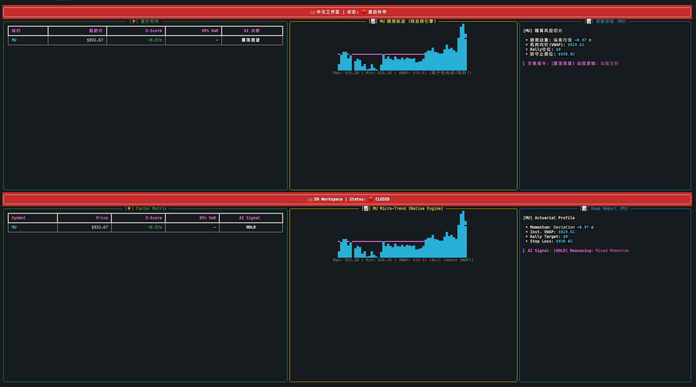

Python 3.13
Asyncio (Pub/Sub)
Pandas-TA
SQLite
Zero-Dep ANSI Engine

Engineered for maximum concurrent computational throughput, the system utilizes a fully asynchronous microservices architecture. It implements a memory-level Pub/Sub pattern via asyncio.Queue, decoupling data I/O from UI rendering to achieve millisecond latency and zero blocking.
Utilizes an asynchronous non-blocking architecture to concurrently ingest multi-asset, dual-timeframe (1Min/1Day) market data. Features a built-in timezone state machine to ensure continuous and normalized data streams.
Executes heavy vectorized matrix computations. Integrates benchmark systemic risk monitoring and calculates real-time VWAP, Z-Score, and dynamic ATR to construct a high-dimensional trading signal matrix.
A proprietary, zero-dependency terminal rendering system. Transforms high-dimensional price time-series data into character matrices in real-time via algorithmic interpolation and ANSI mapping, ensuring absolute stability.
Transcending heuristic technical indicators, this architecture deeply integrates rigorous mathematical statistics and actuarial risk models, constructing a full-stack trading loop from quantitative timing to dynamic position management.
Measures standard deviation multiples of current price variance from the moving average. Anchored with VWAP (Volume-Weighted Average Price), it identifies statistical mean-reversion points during extreme market volatility.
Utilizes a parametric approach to evaluate portfolio risk exposure. Calculates the Maximum Probable Daily Drawdown at a 95% confidence interval, converting extreme tail risks into precise capital alerts.
Dynamically optimizes capital allocation weights based on historical win rates and expected reward-to-risk ratios. Employs rigorous mathematical derivations to calculate the optimal bet fraction that maximizes long-term logarithmic portfolio growth.
The quant terminal is deployed in the cloud. Click the button below to directly access live multi-asset monitoring, actuarial risk control, and dynamic strategy matrices.
🚀 Launch TK Quant Terminal